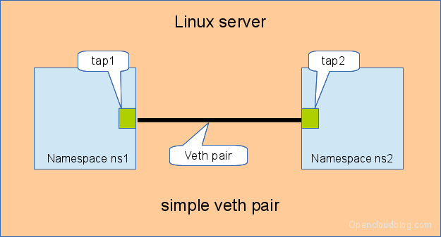
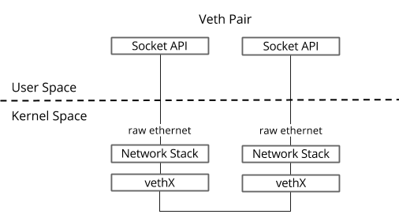
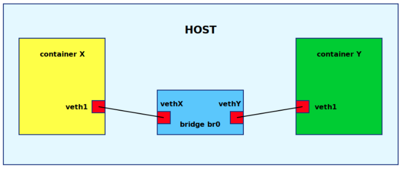

如前文介绍，Linux Network namespace 用于给进程创建一个新的网络栈，路由、防火墙规则、网络设备。man ip-netns：
A network namespace is logically another copy of the network stack, with its own routes, firewall rules, and network devices.
作为对 Network namespace 的实践，本文使用 ip/iptables 等命令模拟下 Docker bridge 网络，并会接触到 Network namespace，veth pair，Linux bridge，NAT 等概念。
实验
使用 ip命令操作 Network namespace
ip netns 子命令用于操作 Network namespace。使用 add 子命令，创建一个 Network namespace。
# ip netns add netns1
查看 netns1 的网络设备（network device）。使用 exec 子命令，后接 netns1 和要执行的命令。默认有一个 DOWN 状态的 lo 设备。
# ip netns exec netns1 ip addr
1: lo: <LOOPBACK> mtu 65536 qdisc noop state DOWN group default qlen 1000
link/loopback 00:00:00:00:00:00 brd 00:00:00:00:00:00
启动 lo 设备。
# ip netns exec netns1 ip link set dev lo up
ping 127.0.0.1。
# ip netns exec netns1 ip addr
1: lo: <LOOPBACK,UP,LOWER_UP> mtu 65536 qdisc noqueue state UNKNOWN group default qlen 1000
link/loopback 00:00:00:00:00:00 brd 00:00:00:00:00:00
inet 127.0.0.1/8 scope host lo
valid_lft forever preferred_lft forever
inet6 ::1/128 scope host
valid_lft forever preferred_lft forever
# ip netns exec netns1 ping 127.0.0.1
PING 127.0.0.1 (127.0.0.1) 56(84) bytes of data.
64 bytes from 127.0.0.1: icmp_seq=1 ttl=64 time=0.013 ms
通过 veth pair，两个 Network namespace 之间点对点网络

https://www.opencloudblog.com/?p=66
veth（virtual ethernet） 是虚拟网络设备（没有硬件，软件实现），veth 设备总是成对创建，数据包从 veth pair 的一头进入，从 veth pair 的另一头出。man veth：
The veth devices are virtual Ethernet devices. They can act as tunnels between network namespaces to create a bridge to a physical network device in another namespace, but can also be used as standalone network devices.
veth devices are always created in interconnected pairs.
Packets transmitted on one device in the pair are immediately received on the other device.
通信方式如下图：

创建 veth pair。默认存在于系统默认的 Network namespace。
# ip link add veth0 type veth peer name veth1
# ip link show
...
35: veth1@veth0: <BROADCAST,MULTICAST,M-DOWN> mtu 1500 qdisc noop state DOWN mode DEFAULT group default qlen 1000
link/ether a2:6d:54:66:9d:24 brd ff:ff:ff:ff:ff:ff
36: veth0@veth1: <BROADCAST,MULTICAST,M-DOWN> mtu 1500 qdisc noop state DOWN mode DEFAULT group default qlen 1000
link/ether 12:73:b7:aa:c6:10 brd ff:ff:ff:ff:ff:ff
可分配到其他 Network namespace。
# ip link set veth1 netns netns1
# ip link show
...
36: veth0@if35: <BROADCAST,MULTICAST> mtu 1500 qdisc noop state DOWN mode DEFAULT group default qlen 1000
link/ether 12:73:b7:aa:c6:10 brd ff:ff:ff:ff:ff:ff link-netnsid 1
# ip netns exec netns1 ip link show
1: lo: <LOOPBACK,UP,LOWER_UP> mtu 65536 qdisc noqueue state UNKNOWN mode DEFAULT group default qlen 1000
link/loopback 00:00:00:00:00:00 brd 00:00:00:00:00:00
35: veth1@if36: <BROADCAST,MULTICAST> mtu 1500 qdisc noop state DOWN mode DEFAULT group default qlen 1000
link/ether a2:6d:54:66:9d:24 brd ff:ff:ff:ff:ff:ff link-netnsid 0
启动网络设备分配 IP 地址和网关。就可以通过 IP 互 ping 了。
# ip link set veth0 up
# ip address add 10.1.1.1/24 dev veth0
# ip netns exec netns1 ip link set veth1 up
# ip netns exec netns1 ip address add 10.1.1.2/24 dev veth1
# ip addr
...
36: veth0@if35: <BROADCAST,MULTICAST,UP,LOWER_UP> mtu 1500 qdisc noqueue state UP group default qlen 1000
link/ether 12:73:b7:aa:c6:10 brd ff:ff:ff:ff:ff:ff link-netnsid 1
inet 10.1.1.1/24 scope global veth0
valid_lft forever preferred_lft forever
inet6 fe80::1073:b7ff:feaa:c610/64 scope link
valid_lft forever preferred_lft forever
# ip netns exec netns1 ip addr
...
35: veth1@if36: <BROADCAST,MULTICAST,UP,LOWER_UP> mtu 1500 qdisc noqueue state UP group default qlen 1000
link/ether a2:6d:54:66:9d:24 brd ff:ff:ff:ff:ff:ff link-netnsid 0
inet 10.1.1.2/24 scope global veth1
valid_lft forever preferred_lft forever
inet6 fe80::a06d:54ff:fe66:9d24/64 scope link
valid_lft forever preferred_lft forever
# ping 10.1.1.2
PING 10.1.1.2 (10.1.1.2) 56(84) bytes of data.
64 bytes from 10.1.1.2: icmp_seq=1 ttl=64 time=0.042 ms
...
# ip netns exec netns1 ping 10.1.1.1
PING 10.1.1.1 (10.1.1.1) 56(84) bytes of data.
64 bytes from 10.1.1.1: icmp_seq=1 ttl=64 time=0.058 ms
...
通过 Linux bridge，多个 Network namespace 之间局域网络
veth pair 只能处理两个 Network namespace 之间的通信。Linux bridge 用于解决多对多通信的问题，这是 Docker 单机的组网方式。

https://godleon.github.io/blog/Docker/docker-network-bridge/
我在 Linux 主机上运行两个 Docker 容器，果然在默认 Network namespace 下有两个 veth 虚拟网络设备，并与 docker0 这个 bridge 连接。
# ip link show | grep veth
6: vethef984be@if5: <BROADCAST,MULTICAST,UP,LOWER_UP> mtu 1500 qdisc noqueue master docker0 state UP mode DEFAULT group default
39: vetha6c50b1@if38: <BROADCAST,MULTICAST,UP,LOWER_UP> mtu 1500 qdisc noqueue master docker0 state UP mode DEFAULT group default
# brctl show
bridge name bridge id STP enabled interfaces
docker0 8000.0242bd4f236d no vetha6c50b1
vethef984be
Linux bridge 相当于一个软件虚拟的网络交换机，工作在链路层。多个端口（如下图）连上多个网络设备，数据从任何端口（网络设备）进来，根据 MAC 地址决定数据的出口端口（网络设备）。效果上，交换机是把多个所属一个子网网段的物理网络设备组成一个局域网。Linux bridge，把多个所属一个子网网段的虚拟网络设备组成一个局域网。
A bridge is a piece of software used to unite two or more network segments. A bridge behaves like a virtual network switch, working transparently (the other machines do not need to know about its existence). Any real devices (e.g.
eth0) and virtual devices (e.g.tap0) can be connected to it.
A network switch (also called switching hub, bridging hub, and by the IEEE MAC bridge)[1] is networking hardware that connects devices on a computer network by using packet switching to receive and forward data to the destination device.
A network switch is a multiport network bridge that uses MAC addresses to forward data at the data link layer (layer 2) of the OSI model.
动手使用 Linux bridge 和 veth pair 组成一个容器网络。创建网络设备，2 x veth pair，1 x bridge。网络设备的连接状态：veth0 <-> veth1，veth2 <-> veth3，br0。
# ip link add veth0 type veth peer name veth1
# ip link add veth2 type veth peer name veth3
# ip link add br0 type bridge
veth0/veth2 连上 br0，veth0/veth2 沦为「网线」。 网络设备的连接状态：veth3 <-> veth2 <-> br0 <-> veth0 <-> veth1。
# ip link set veth0 master br0
# ip link set veth2 master br0
创建两个容器网络，veth1/veth3 分别放入容器网络。
# ip netns add netns1
# ip netns add netns2
# ip link set veth1 netns netns1
# ip link set veth3 netns netns2
启动网络设备。
# ip link set veth0 up
# ip netns exec netns1 ip link set veth1 up
# ip link set veth2 up
# ip netns exec netns2 ip link set veth3 up
# ip link set br0 up
分别为主机 br0，容器 veth1，容器 veth3 设置同一网段的 IP。
网络设备的连接状态：veth3（10.1.1.3） <-> veth2 <-> br0（10.1.1.1） <-> veth0 <-> veth1（10.1.1.2）。
# ip address add 10.1.1.1/24 dev br0
# ip netns exec netns1 ip address add 10.1.1.2/24 dev veth1
# ip netns exec netns2 ip address add 10.1.1.3/24 dev veth3
网络状态如下。
# ip netns exec netns2 ip addr
...
6: veth3@if7: <BROADCAST,MULTICAST,UP,LOWER_UP> mtu 1500 qdisc noqueue state UP group default qlen 1000
link/ether 62:d1:04:0b:cc:3d brd ff:ff:ff:ff:ff:ff link-netnsid 0
inet 10.1.1.3/24 scope global veth3
valid_lft forever preferred_lft forever
inet6 fe80::60d1:4ff:fe0b:cc3d/64 scope link
valid_lft forever preferred_lft forever
# ip netns exec netns1 ip addr
...
3: veth1@if4: <BROADCAST,MULTICAST,UP,LOWER_UP> mtu 1500 qdisc noqueue state UP group default qlen 1000
link/ether 32:9c:7e:1b:38:ac brd ff:ff:ff:ff:ff:ff link-netnsid 0
inet 10.1.1.2/24 scope global veth1
valid_lft forever preferred_lft forever
inet6 fe80::309c:7eff:fe1b:38ac/64 scope link
valid_lft forever preferred_lft forever
# ip addr
...
4: veth0@if3: <BROADCAST,MULTICAST,UP,LOWER_UP> mtu 1500 qdisc noqueue master br0 state UP group default qlen 1000
link/ether ee:5f:6c:c2:b2:e8 brd ff:ff:ff:ff:ff:ff link-netnsid 0
inet6 fe80::ec5f:6cff:fec2:b2e8/64 scope link
valid_lft forever preferred_lft forever
5: br0: <BROADCAST,MULTICAST,UP,LOWER_UP> mtu 1500 qdisc noqueue state UP group default qlen 1000
link/ether 72:a4:b4:52:bf:6d brd ff:ff:ff:ff:ff:ff
inet 10.1.1.1/24 scope global br0
valid_lft forever preferred_lft forever
inet6 fe80::d0e2:fff:fe05:da37/64 scope link
valid_lft forever preferred_lft forever
7: veth2@if6: <BROADCAST,MULTICAST,UP,LOWER_UP> mtu 1500 qdisc noqueue master br0 state UP group default qlen 1000
link/ether 72:a4:b4:52:bf:6d brd ff:ff:ff:ff:ff:ff link-netnsid 1
inet6 fe80::70a4:b4ff:fe52:bf6d/64 scope link
valid_lft forever preferred_lft forever
# brctl show
bridge name bridge id STP enabled interfaces
br0 8000.72a4b452bf6d no veth0
veth2
宿主机与两个容器能互 ping 成功。
# ping 10.1.1.2
PING 10.1.1.2 (10.1.1.2) 56(84) bytes of data.
64 bytes from 10.1.1.2: icmp_seq=1 ttl=64 time=0.033 ms
# ping 10.1.1.3
PING 10.1.1.3 (10.1.1.3) 56(84) bytes of data.
64 bytes from 10.1.1.3: icmp_seq=1 ttl=64 time=0.046 ms
# ip netns exec netns1 ping 10.1.1.1
# ip netns exec netns1 ping 10.1.1.3
# ip netns exec netns2 ping 10.1.1.1
# ip netns exec netns2 ping 10.1.1.2
网络结构类似如下。

https://wvi.cz/diyC/networking/#connecting-containers-using-bridge
通过 NAT （iptables 设置）访问外部网络
目前为止，容器局域网通了，但容器内还无法访问外部网络。
我们的宿主机现在是双网卡，一个 eth0 连接外部网络，一个 br0 连接容器网络。宿主机上开启 IP forwarding。
# sysctl -w net.ipv4.ip_forward=1
IP forwarding should be enabled when you want the system to act as a router, that is transfer IP packets from one network to another.
宿主机上使用 iptables (administration tool for IPv4/IPv6 packet filtering and NAT) 进行 10.1.1.0/24 网段地址的地址转换，因为 eth0 网络不认识 10.1.1.0/24 网段地址。
# iptables -t nat -A POSTROUTING -s 10.1.1.0/24 -j MASQUERADE
- -t nat：选择 nat 表，不指定，默认是 filter 表。
- -A：Append 新增一条规则，-D Delete，-L List。
- POSTROUTING：选择 POSTROUTING chain，POSTROUTING代表数据包出口阶段。
- -s 10.1.1.0/24：匹配条件，source address 是网段 10.1.1.0/24 中的 IP。
- -j MASQUERADE：匹配后执行命令，执行 MASQUERADE，也就是源 IP 地址伪装为出口网卡 IP。对于 nat 表来说，可选项有 DNAT/MASQUERADE/REDIRECT/SNAT。
因为 Network namespace 隔离后，路由也是独立的。容器内添加默认网关，ping baidu.com，baidu 的 IP 不在当前网段，让默认网关处理，也就是 br0 的 IP 地址 10.1.1.1。
# ip netns exec netns1 ip route add default via 10.1.1.1 dev veth1
# ip netns exec netns2 ip route add default via 10.1.1.1 dev veth3
# ip netns exec netns1 ip route
default via 10.1.1.1 dev veth1
10.1.1.0/24 dev veth1 proto kernel scope link src 10.1.1.2
# ip netns exec netns2 ip route
default via 10.1.1.1 dev veth3
10.1.1.0/24 dev veth3 proto kernel scope link src 10.1.1.3
容器内增加 DNS 地址解析。宿主机上默认是 127.0.0.53:53，而容器网络栈内没有这个服务。因为文件系统没有容器隔离，可以直接修改 /etc/resolv.conf，新增一个 114 DNS 地址。
# vim /etc/resolv.conf
nameserver 114.114.114.114
nameserver 127.0.0.53
options edns0
外部网络可通。
# ip netns exec netns1 ping baidu.com
PING baidu.com (220.181.38.148) 56(84) bytes of data.
64 bytes from 220.181.38.148 (220.181.38.148): icmp_seq=1 ttl=61 time=29.4 ms
参考
man ip-netnsman ip-linkman vethman addressman iptablesman iptables-extensions- Network bridge https://wiki.archlinux.org/index.php/Network_bridge
- 探索 Docker bridge 的正确姿势，亲测有效！http://blog.daocloud.io/docker-bridge/
- NAT - Network Address Translation https://www.karlrupp.net/en/computer/nat_tutorial
- How to Disable/Enable IP forwarding in Linux https://linuxconfig.org/how-to-turn-on-off-ip-forwarding-in-linux
Last modified on 2020-09-07